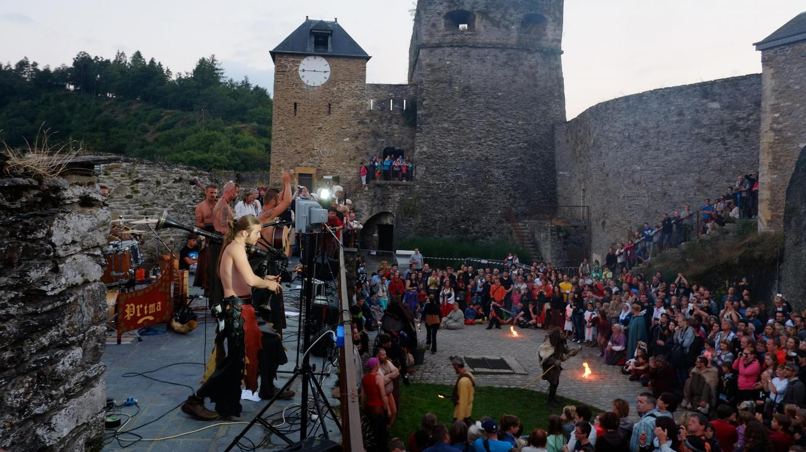
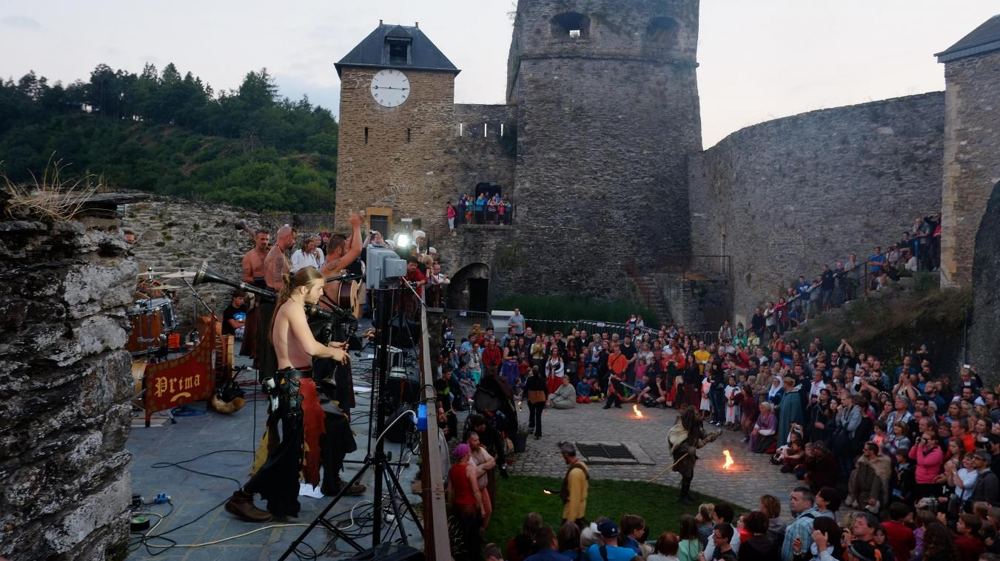

Histoire de Cuirs
Où nous retrouver
Nous-y serons! Retrouvez-nous: Historia Mundi - Rassemblement multi-époques
Abbaye de Brogne (Saint-Gérard) - Grande fête médiévale

La Roche en Ardennes - Grande fête xvii° Siècle
Nous-y serons! Retrouvez-nous: Historia Mundi - Rassemblement multi-époques
Abbaye de Brogne (Saint-Gérard) - Grande fête médiévale
La Roche en Ardennes - Grande fête xvii° Siècle
